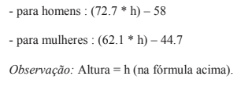

Hora de Codar 2: A Vingança do Coder
1. Escreva um programa em que o usuário informe dois números. Então escreva em tela o maior deles.
2. Faça um programa que leia um valor informado pelo usuário e diga se o valor informado é positivo, negativo ou zero.
O numero digitado é:
3.Faça um programa para ler 3 valores (considere que não serão informados valores iguais) e escrever o maior deles.
4. Faça um programa que leia 3 valores informados pelo usuário
(considere que não serão informados valores iguais) e escrever a soma dos 2 maiores.
5. Faça um programa que leia 6 valores informados pelo usuário,
calcule, exiba os números informados e escreva a média aritmética desses valores lidos.
6. Faça um programa que receba quatro valores informados pelo usuário, mas informe somente o primeiro,
o último e o maior de todos eles (considere que todos os números informados serão diferentes)
7. Faça um programa que leia 6 números que o usuário vai informar. Todos os números lidos com valor inferior a 72 devem ser somados.
Escreva o valor final da soma efetuada e também todos valores que o usuário informou.
8. Escreva um programa que calcule a média de quatro números informados pelo usuário, mas somente se esses números forem maiores que 0 e menores que 10.
No final, se a média for maior que cinco o usuário receberá uma mensagem "Você passou no teste". Em qualquer outra situação, ele receberá uma mensagem de "tente novamente"
9. Escreva um programa para ler o ano de nascimento de uma pessoa e escrever uma mensagem que diga se ela poderá ou não votar este ano
(não é necessário considerar o mês em que ela nasceu).
O resultado vai aparecer aqui:
10. Tendo como entrada a altura e o gênero designado ao nascer de uma pessoa
construa um programa que calcule e imprima seu peso ideal, utilizando as seguintes fórmulas.
